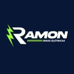
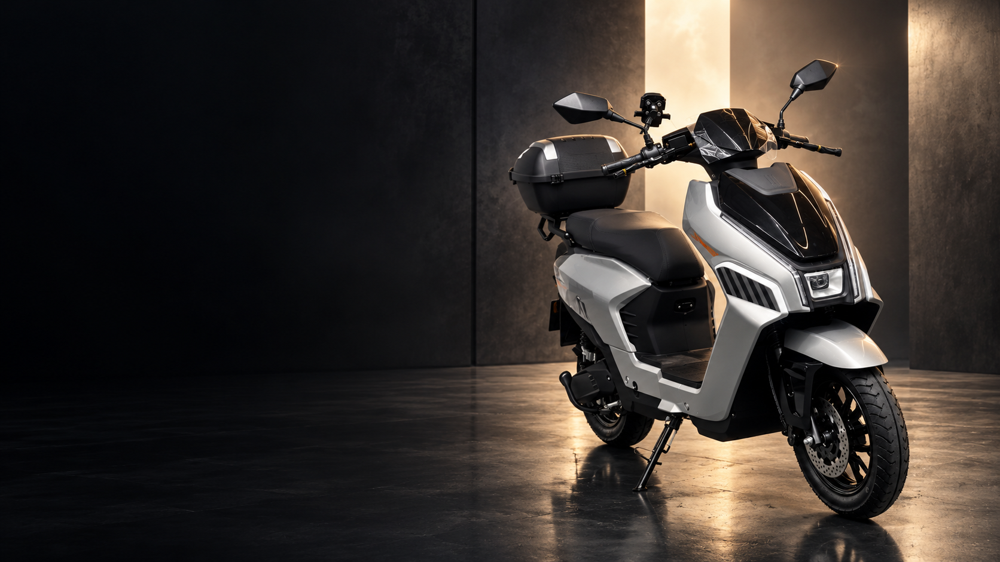

Ilha dos Valadares
Rua José Vicente Elias, 1513
Ilha dos Valadares · Paranaguá, PR

Atendimento ↗
RAMON · ELECTRIC MOBILITY
Design que impressiona.
Liberdade que transforma a sua rotina.
01 / A ESSÊNCIA RAMON
SEU TEMPO. SEU CAMINHO.A cidade ganha outra perspectiva quando você escolhe como se mover. Na Ramon, design, mobilidade e atendimento próximo se encontram para acompanhar a sua rotina.
Conheça a experiência ↗02 / ENCONTRE A SUA ELÉTRICA
Scooters, triciclos e novas possibilidades.
Uma coleção para diferentes formas de viver a cidade.
Condições, cores e disponibilidade sob consulta. As fotos apresentam os modelos; confirme a configuração com a equipe.
03 / A EXPERIÊNCIA CONTINUA
Na Ramon, a mobilidade elétrica faz parte do dia a dia. Scooters, bicicletas e triciclos para diferentes caminhos, com uma equipe por perto para ajudar você a escolher.
Conte como é o seu trajeto. Converse sobre os modelos, as características e a opção que combina com você.
Assistência técnica própria, peças e acessórios. Consulte a equipe para cuidar da sua elétrica.
04 / VISITE A RAMON
Conheça os modelos de perto.
Fale com a equipe antes de visitar.
Rua José Vicente Elias, 1513
Ilha dos Valadares · Paranaguá, PR
Parque Agari · Paranaguá, PR
Consulte o endereço exato pelo WhatsApp.
Segunda a sexta · 08h30 às 18h
Sábado · 08h30 às 13h
Domingo · fechado
05 / CADA DETALHE IMPORTA
Escolha um modelo no catálogo e toque em “Consultar pelo WhatsApp”. A mensagem já inclui o nome do modelo para a equipe informar valor, cores e disponibilidade atualizados.
Distância, tipo de trajeto e frequência de uso ajudam na escolha. Conte essas informações à equipe da Ramon para conhecer as opções e confirmar as características de cada modelo.
Sim. A Ramon conta com assistência técnica própria. Fale com a equipe para consultar serviços, peças e agendamento.
Você pode visitar as unidades em Paranaguá. Antes de sair, confirme pelo WhatsApp em qual loja está o modelo que deseja conhecer.
O PRÓXIMO CAMINHO COMEÇA AQUI